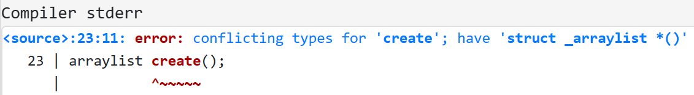
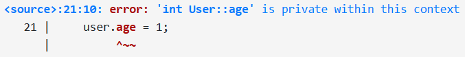

3 面向对象程序设计 | Object-Oriented Programming¶
约 4520 个字 224 行代码 3 张图片 预计阅读时间 18 分钟
本节录播地址
本节的朋辈辅学录播可以在 B 站 找到！
在上一节中，我们讨论了编程范式和抽象的相关内容。而我们要介绍的 OOP 也是一种编程范式；它在结构化程序设计的基础上做了进一步的抽象。
OOP 强调封装、继承和多态。我们通过一些例子来解释这些思想。
Warning
本节的主要目标是介绍 OOP 的思想，其中包含的一些实现和语言细节不一定完全合理和准确；在后面的章节中我们会更加精确地描述 C++ 中的相关语法。
3.1 封装 | Encapsulation¶
struct 概念的扩展¶
我们来考虑这样一个情景。假如我们和队友一起做大程，想要做一个绘图板。在这个工程中，会有一些地方要使用到线性表 (list)。我们知道，线性表是一种抽象数据类型 (ADT, Abstract Data Type)；它能够有序地存放若干数据，数据是可以有重的；它支持的操作可能包括创建表、获取大小、插入元素、删除元素、访问元素等。
如果不知道什么是线性表或者抽象数据类型
抽象数据类型 是数据类型的一种抽象模型。
我们知道，数组和链表都可以实现有序地存放若干可重数据的功能，它们支持的操作也类似，唯一的区别是其内部实现和这些操作的复杂度不同。但是，有时使用者或者系统的设计者并不需要关心具体的实现，而只需要知道这个类型能够提供哪些功能就可以了。这其实就和我们上一节提到的「抽象」的含义一致。
也就是说，数组和链表都是具体的数据结构，但它们提供的功能是一致的。因此，我们将它们抽象为同一种 ADT，即线性表。
（另外，抽象数据类型不受实现的限制，例如 bignum 就比 int 抽象）
线性表的常见实现方式包括数组 (array list) 和链表 (linked list)，我们和队友分别实现一种。我们可能会分别写出这样的代码：
（下面的 elem 是线性表元素的类型，例如 typedef Shape elem。）
链表的版本 （可以玩一下 https://godbolt.org/z/GYWjsKhbM)：
1 2 3 4 5 6 7 8 9 10 11 | |
数组的版本（可以玩一下 https://godbolt.org/z/39G916Yq5）：
1 2 3 4 5 6 7 8 9 10 11 12 13 | |
上面的两个版本，都可以使用如下的代码执行：
1 2 3 4 5 6 7 8 9 10 11 12 13 14 15 16 17 | |
它们单独使用都没什么问题。但是，当我们把这两份代码 include 到一起时就发生了错误！因为 C 语言并不允许同名函数有不同类型的版本。下面是报错之一：
{kind=link}

所以，如果我们想在同一个工程里同时使用这两个库，我们就不得不给相关函数改个名，例如 create() 分别改为 llist_create() 和 alist_create() 等。
但是这很不优雅！而且当我们希望更改部分代码中使用的线性表类型的时候，我们需要将所有使用到相关函数的地方都改一遍名字！这太难过了。问题出在哪里呢？事实上，create, add 之类的函数都应当属于对应的 linkedlist 或者 arraylist 这样的具体的类型，而不应当属于全局；但 C 语言弱化了这一点。在 OOP 的思想中，我们会将 数据 和 操纵数据的函数 用更加明显的方式捆绑在一起；从语法上说，就是我们扩展了 struct：现在 struct 不仅能包含 成员变量，还能包含 成员函数 了：
链表的版本（可以玩一下 https://godbolt.org/z/x4M8e86KW）：
Tips
大家不必太在意这里的语法细节（例如 static 和 const 之类的），后面会慢慢讲的！这里只需要了解到 struct 的成员现在也可以有函数就可以了！
1 2 3 4 5 6 7 8 9 10 11 12 13 14 | |
数组的版本（可以玩一下 https://godbolt.org/z/TM7GTf58n）：
1 2 3 4 5 6 7 8 9 10 11 12 13 14 15 16 | |
经过了这样的修改后，我们调用一些成员函数时就不再是使用 size(list) 了，而是使用 list.size()；成员函数 size() 能够获取调用者的数据，并在此基础上做一些计算。
「将 数据 和 操纵数据的函数 捆绑在一起」是 封装 (encapsulation) 思想的一部分。这种扩展后的 struct，在 C++ 中也称为 class，即 类。我们会在稍后解释 C++ 中 class 和 struct 的区别。
这样，在将两份代码共同使用时就不会出现问题了；因为虽然存在同名函数，但是它们分属于不同的类里。例如两个类中的 get 函数实际上分别叫做 linkedlist::get 和 arraylist::get。这里的 :: 叫做 scope resolution operator，用来指示「linkedlist 中的那个 get」或者「arraylist 中的那个 get」。
对象和类¶
所以，在面向对象的世界里，「类」到底描述的是什么东西呢？「对象」又是什么呢？
对象的英文是 object，它的一个意项是「物体、物品」。实际上一切事物都可以理解为一个（研究某项问题）的对象，每个对象都有其 状态 和 行为。例如，你的男朋友（如果有）就可以理解为一个对象：他的状态包括年龄、身高、职业、资产等等，行为包括学习、赚钱、花钱、长高等等。
从编程的角度来看，「状态」可以由数据变量表示，「行为」可以由函数来实现。
类又描述的是什么呢？刚才我们提到的「你的男朋友」的 状态 和 行为，在其他的人 （我们姑且假设你的男朋友是人类） 身上也具备。换句话说，任何一个人都具有上述特性（状态和行为），因此「人类」就是这些人共同所属的类型。再抽象一点来讲，就是每个对象都属于一个描述其特性的类，类是一个共享相同结构和行为的对象的集合。
从编程的角度看，类其实是一种（用户自定义的）数据类型，程序员可以创建这种类型的变量（称为 对象 或 实例 (instance)）并操纵这些变量（对其发送请求，对象根据信息进行操作）。这种数据类型是状态和行为的集合，通常以变量和函数来描述和定义。这些变量和函数，是这个类的 成员。
也就是说，在 C 语言这种非 OOP 的语言中，用户自定义的类型只能定义「状态」而不能定义「行为」；这种思考方式更贴近于机器实现，因为在真正的汇编代码中确实不能有同名的函数。不过，OOP 在此基础上做了进一步抽象，让代码更加贴近人们对于「类」这种自然产生的概念的理解；其实现则交由编译器来完成。
访问控制¶
关于封装的含义，我们再考虑另一个问题！
比如我们设计了这样的一个类：
1 2 3 4 5 6 7 | |
但是，外部代码可以这样写：
- 窃取数据：
printf("%s", user1.password); - 篡改数据：
user1.password = str; - 填入非法值：
user1.age = -100;
也就是说，在类中的成员变量对外部直接可访问的情况下，容易导致信息丢失和逻辑混乱。C++ 提供了 access-specifier 来解决这个问题。
Access-specifier 用来提供访问控制，包括 public, private 和 protected 三种，其中 protected 是在 Release 2.0 中加入的。我们讨论前面两种。
所谓 public，是说这之后的成员变量和成员函数对外部可见；而 private 则是说这之后的成员变量和成员函数不能在类外被访问，只能在类的成员函数内访问或调用。例如上面的 User 可以改成这样：
1 2 3 4 5 6 7 8 9 10 11 12 13 | |
在这种情况下，如果外部代码尝试访问 private 变量，就会被编译器拒绝：
{kind=link}

这是封装思想的另一部分，即限制对对象的一部分状态和行为的直接访问。部分成员变量可能会被拒绝访问，只能被内部使用（例如上面的 password）；另一部分变量可能会通过类似 getAge() 和 setAge() 的 getters and setters 被有限制或者经检查地访问（例如上面的 age）。
封装 != 安全
封装是（通过编译错误来）防止程序员犯错的方式，而非一种安全机制。
「Encapsulation prevents mistakes, not espionage.」
Tips
注意：请不要为 每个 private 成员变量都弄一个 getter 和 setter；这两者也 不一定 需要成对出现。当且仅当需要时再提供这些接口。
C++ 中 class 和 struct 的区别
事实上，在 C++ 中 class 和 struct 的 唯一 区别是：class 的所有成员默认是 private 的，而 struct 的所有成员默认是 public 的class.access.general#3；没有其他任何差别。因此，class Foo { /* something */ }; 和 struct Foo {private: /* something */ }; 是完全等价的。
小结¶
总结来说，封装 思想将数据与操纵数据的函数以更加明确的方式绑定在一起，并给予必要的访问控制，从而防止外部随意访问类的成员变量或函数。
这种方式也有助于降低系统的复杂性和提高代码的可维护性，例如在前例中，如果我们希望模糊所有输出的年龄数据（例如舍入到 10），我们只需要修改 getAge() 中的代码，而不需要在所有访问过 user.age 的地方做修改。
3.2 继承 & 多态 | Inheritance & Polymorphism¶
考虑这样一个问题！我们在 3.1 中假设我们和队友一起做大程，想要做一个绘图板；我们已经做好了某种 list，用来保存我们的各种图形。假设我们目前支持 2 种图形：圆形和长方形。我们设计了如下的类：
1 2 3 4 5 6 7 8 9 10 11 12 13 14 15 16 17 18 19 20 21 22 23 | |
Tips
在 C++ 中，如果有对 struct Foo 的定义，在使用这个结构体时只需要写 Foo 即可，而无需像 C 语言那样带上关键字 struct。class 也类似。上面代码第 5 行是一个例子。
这种设计存在一些问题。
其一，我们可以看到 Circle 和 Rectangle 包含了一些公共的部分，例如 center 成员和 draw() 中的准备和后续处理。这种设计的问题是，如果我们希望调整准备和后续处理的内容（例如设置画笔颜色），我们需要在这两个类中都做一次相同的修改；当然，我们可以通过把「准备」和「后续处理」提出成函数来部分解决上面的问题（虽然这样会一定程度上破坏封装性）：
1 2 3 4 5 6 7 8 9 10 11 12 13 14 15 16 17 18 19 20 21 22 23 24 | |
但是，如果我们希望给各个图形类添加一些公共的属性（例如颜色），我们就仍然不得不在各个类中都做一次相同的修改。这时我们就没办法通过类似上面的方式解决了。而且如果我们支持更多的图形种类，这种重复会更多。这说明我们的代码复用性较差、维护难度较高。
其二，在这样的设计下，我们想要使用前面的某种线性表保存时，不得不保存为两个线性表；但是由于 typedef 不能像 #define 那样取消定义，因此我们可能写出这样的丑陋代码：
1 2 3 4 5 6 7 | |
而且其实这个代码还没办法成功编译，因为在这种情况下，我们会有两份不同的 node 和 linkedlist 定义：

即使不考虑语言的限制，也会出现的一个问题是：如果我们支持 16 种不同的图形，那么我们就需要 16 个不同的链表来保存这些图形；在每次遍历、查找、删除、插入等事件发生时，代码都需要处理这 16 个链表，这是非常不优雅的。更不优雅的是，如果要增加一种新的图形，我们需要在 每处 使用链表的地方都增加对新的图形对应链表的处理（高亮处表示增加一种新的图形需要做的更改）：
1 2 3 4 5 6 7 8 9 10 11 12 13 14 15 16 17 18 19 20 21 22 23 24 25 26 27 | |
这也说明我们当前的代码的可维护性较低。
我们介绍 OOP 中的 继承 (inheritance) 机制，用来解决这个问题。这种机制允许我们建立「有层次的」类，而非独立的一个一个的类。
例如我们定义了「人类」这个类，有时我们需要更细致的划分。例如我们需要「学生」这样一个类。显然，「学生」是「人类」的真子集，因此「学生」这个类必然拥有「人类」的状态和行为。而不同的是，「学生」作为一个更细的划分，具有一些「人类」不一定具有的状态和行为，例如均绩和交作业。继承 可以让我们克隆已经存在的类的状态和行为，并在克隆的基础上进行一些增加或修改，从而获得我们需要的类。我们把被继承的类称为 基类 (base class)，而继承产生的新类称为 派生类 (derived class)。
再次提示！本节中，大家不必太在意语法细节。
基类也被称为 父类 (parent class) 或者 超类 (super class)；派生类也被称为 子类 (child class / sub class)。
拿前面的例子来说，我们可以设计出这样的类：
1 2 3 4 5 6 7 8 9 10 11 12 13 14 | |
我们设计了一个基类 Shape，它保存了各种图形共同具有的状态（center）和行为（draw()）；同时规定了所有派生类都需要实现一个 do_draw() 函数来完成绘制自身的实际操作。
这样，子类通过 class Circle : public Shape 的语法说明它继承自 Shape，即说明了「一个 Circle 是一个 Shape」的逻辑，因此 Circle 类自然包含了 Shape 中的所有状态和行为（即 center 和 draw）。这样，子类就只需要处理自己独有的成员变量和成员函数的实现了：
1 2 3 4 5 6 7 8 9 10 11 12 13 14 15 16 17 | |
值得注意的是，基类中的 draw() 函数中完成了共有的「准备」和「后续处理」的操作，从而提高了代码的重用度；并调用了 do_draw() 函数来使用 子类 的绘图操作完成真正的绘图。
也就是说，虽然代码中写的是 do_draw()，但是代码运行时会根据调用它的对象的实际类型来决定到底调用 Circle::do_draw() 还是 Rectangle::do_draw() 。这种机制就是 OOP 中的 多态 (polymorphism)。
继承和多态的共同作用，使得上面的代码展现出了非常好的可维护性！在这种情况下，我们使用这些类是非常方便的：
1 2 3 4 5 6 7 8 9 | |
这里我们可以把指向 Circle 和 Rectangle 的指针当做指向 Shape 的指针作为 list 中的元素，这种将派生类对象当做基类对象处理的机制叫做 向上转型 (upcasting)。这样做的合法性是容易理解的，因为继承关系本来就是「派生类的对象是基类的对象」的意思。那在实际使用中，程序如何知道这个对象到底属于哪个类型呢？我们留到后面具体讨论 C++ 中的类的时候再展开！
我们举例说明代码的可维护性。例如我们想要给所有图形增加「颜色」属性，我们只需要在 Shape 中增加一个字段，并且在 prepare() 中增加设置画笔颜色的代码，必要的话在 finalize() 中增加重置画笔颜色的代码即可。
再例如我们想要增加一种新的图形：文本框；并且希望给它增加「画笔粗细」的控制功能，我们不需要对现有代码做任何更改：
1 2 3 4 5 6 7 8 9 10 11 12 | |
3.3 总结¶
本节中，我们讨论了 OOP 的三个重要思想，即封装、继承和多态。封装强调「数据」与「操纵数据的函数」的绑定以及必要的访问控制，从而抽象出「类」和「对象」的概念；继承则进一步刻画出了现实问题中「派生类对象是基类对象」的「is-a relationship」，从而形成「hierarchy of classes」，有助于提高代码重用性；而多态则在这种「hierarchy of classes」的结构中提供了进一步的抽象，允许程序员把「判断对象到底是哪个子类」的任务交给计算机，从而能够在代码扩展时不需要修改原有代码就能自动适配新的类型。
可以看到，如我们之前所说，随着抽象程度的逐步提高，代码的可读性和可维护性也会得到进一步的提升，代码会更接近于程序员对问题的建模，而更少地关注机器实现的细节。当然，与此同时，省略的这些细节也需要语言本身在编译时或者运行时完成具体的实现。在后面的若干节中，我们将会讨论 C++ 对 OOP 的支持。
我们将在后面的章节中介绍这里提到的「组合」以及「泛型编程」。
不过需要说明的是，类、封装、继承、多态的概念并非 OOP 独有的；甚至可能各位在曾经的编程过程中也自然而然地使用了相似的做法或思想。同时，OOP 只是 C++ 支持的多种编程范式之一；它将类结构化，并使用多态来实现对数据的操控、通过继承扩展代码。因此，如果问题本身并不具有继承的结构，就没有必要强行使用 OOP。在一些情况里，使用单独的类、单独的函数，或者使用组合而非继承，又或者使用泛型编程，可能更加适合。
颜色主题调整
评论区~
有用的话请给我个赞和 star =>
快来跟我聊天~